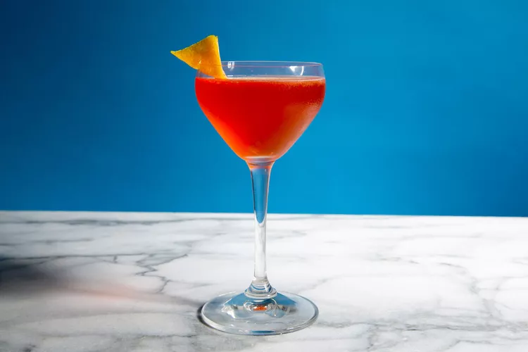

10. Paper Plane
The Paper Plane has just enough sweetness to counteract its bitter and sour notes, and its signature orange hue comes from Aperol.

One of our favorite whiskey cocktails, the Paper Plane is a beautifully balanced bourbon drink with a lovely orange hue thanks to the inclusion of Aperol.
Ingredients
Ice
3/4 ounce bourbon
3/4 ounce Nonino Quintessentia amaro
- Bittersweet Italian liqueur
3/4 ounce Aperol
- Bitter orange Italian aperitif
3/4 ounce fresh lemon juice
How to prepare
Step 1
- Fill a cocktail shaker with ice. Add all of the remaining ingredients and shake well. Strain into a chilled coupe.
Helpful Swaps
Balance is Key
- The four equal ingredients create a perfect balance of sweet, bitter, sour, and spirit flavors.
Don't Overshake
- Over-shaking will dilute the drink too much, making it watery.
Make Batches
- The simple equal-parts ratio makes it easy to scale up for a batch cocktail for parties.
Experiment with Amaros
- If you don't have Amaro Nonino, try other amaros like Campari for a more bitter experience or Cynar for a unique artichoke flavor.
Enjoy your Paper Plane Cocktail!